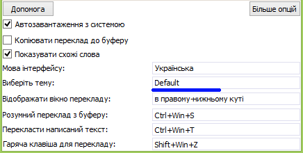

Основні відомості
Основні відомості
QuickTranslator - вільна програма для швидкого і легкого перекладу тексту з іноземної мови на ту, яка Вам потрібна. Її основними можливостями є:
Програма підходить для дуже швидкого перекладу практично будь-якого тексту, переводити його можна не тільки з браузера, але і зі всіх місць де його можна просто виділити. Дуже корисною вона буде для студентів або людей які потребують переведення великої кількості форматованого тексту або тексту таблиць, тому функція «розумного перекладу» дозволяє переводити все це єдиним натисненням клавішного скорочення, без необхідності переведення комірок таблиці окремо по одній.
Управління програмою здійснюється через контекстне меню програми в треї панелі завдань, звідти можна приховати або показати головне вікно програми а також повністю її завершити.
 Можливості
Можливості
Швидкий переклад виділеного тексту

Особливістю програми є дуже зручний спосіб перекладу, при якому навіть не потрібно копіювати потрібний текст, його потрібно всього лише виділити і натиснути комбінацію клавіш (за замовчуванням Shift+Win+Z), після чого Ви отримаєте результат виділеного тексту у вигляді невеликого віконця з перекладом.
За замовчуванням при перекладі виділеного або введеного тексту, якщо Ви перекладаєте одне-два слова, для них відображається кілька можливих варіантів перекладу, що іноді може добре допомогти в розумінні того чи іншого слова.
Переклад написаного вручну тексту
Також зручною є функція перекладу введеного вами тексту, наприклад для ручного перекладу з картинки. Для виклику вікна введення тексту існує своя комбінація клавіш (за замовчуванням Ctrl+Win+T), після натиснення якої на екрані з'являється невелике вікно, після написання в ньому необхідного тексту програма відобразить його переклад.
Напевно, найкориснішою функцією є функція «Розумного перекладу», яка за замовчуванням викликається комбінацією клавіш Ctrl+Win+S, вона дозволяє перекладати не просто звичайний, але також і форматований текст, в якому зберігаються всі Ваші налаштування, такі як шрифт тексту, розмір , колір, курсив, жирний, підкреслений і т.д., що буває дуже зручно і дозволяє сильно прискорити свою роботу, але він також дозволяє перекладати і цілі таблиці. Приміром, до цього Ви перекладали понад 100 комірок таблиці вручну, переводячи їх по одній, зараз Вам потрібно скопіювати таблицю і натиснути комбінацію клавіш, після чого буде перекладена кожна комірка таблиці, результат перекладу буде збережено до буферу і його можна буде просто «Вставити».
Налаштування
При запуску програми відображається вікно з налаштуваннями, для відображення всіх налаштувань потрібно натиснути кнопку «Більше опцій». Програма має наступні налаштування:
Основна опція дозволяє вибрати мову, з якої потрібно перекладати текст і мова, на яку треба перекладати цей текст. Програма дозволяє перекладати текст з 90-та мов світу. Для вибору потрібної мови потрібно двічі клікнути по неї.
(За замовчуванням переклад з Авто на Мова системи)
Дозволяє автоматично запускати програму при запуску операційної системи. Ця опція дозволяє позбутися від постійного самостійного запуску програми і дозволяє їй завжди бути готовою до перекладу.
(За замовчуванням увімкнена)
Копіювання перекладу до буферу
При увімкнені копіює перекладений текст до буферу обміну, це дозволяє не копіювати його вручну з вікна перекладу і збільшує швидкість роботи при перекладі великої кількості тексту.
(За замовчуванням вимкнена)
Здійснює відображення схожих слів для одного-двох слів, які переводяться, деякі слова мають кілька значень, тому ця можливість буде корисною при необхідності визначити значення слова в конкретному випадку.
(За замовчуванням увімкнена)
Як зрозуміло з назви дозволяє змінити мову інтерфейсу, за умовчанням вибирається мова системи, але якщо програма не перекладена на Вашу мову Ви можете вибрати іншу, яку також розумієте.
(За замовчуванням мова системи інакше англійська)
Вибір теми оформлення програми

Дозволяє вибрати бажану тему оформлення програми із запропонованого списку, в наявності світла і темна теми, а також легка тема, яка встановлена за замовчуванням. Надалі їх кількість буде збільшено.
(За замовчуванням легка тема)
Дана опція дозволяє вибрати спосіб відображення перекладу, в даний момент програма дозволяє виводити переклад наступними способами:
(За замовчуванням відображається в нижньому правому куті)
Окремими налаштуваннями є налаштування гарячих клавіш перекладу для кожного з режимів. Зараз існую три режими перекладу:
Для зміни комбінації клавіш потрібно клікнути по її відображенні в програмі і ввести свою комбінацію. При відображенні комбінації червоним кольором її потрібно змінити, це відбувається коли дана комбінація вже зайнята іншою програмою або системою.
(За замовчуванням переклад виділеного тексту: Shift+Win+Z)
(За замовчуванням переклад введеного тексту: Ctrl+Win+T)
(За замовчуванням «Розумний переклад»: Ctrl+Win+S)
Дякую за використання цієї програми! Сподіваюся вона принесе Вам багато позитивних емоцій і дозволить скоротити багато годин, які Ви б витратили на ручний переклад тексту і (або) документів.
Бажаю вдалого використання!
Якщо вам сподобалася програма, Ви можете підтримати подальшу розробку програми і майбутніх проектів:
Web Гаманець
WMR: R243421992717
WMU: U275261423550
WMK: K407115109469
WMZ: Z100236886128
Автор: Михайло Рожко
Пошта: mihail.rozshko@gmail.com
Сайт: BimuSoft.hol.es